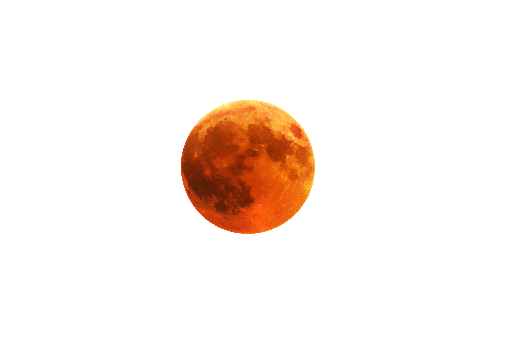
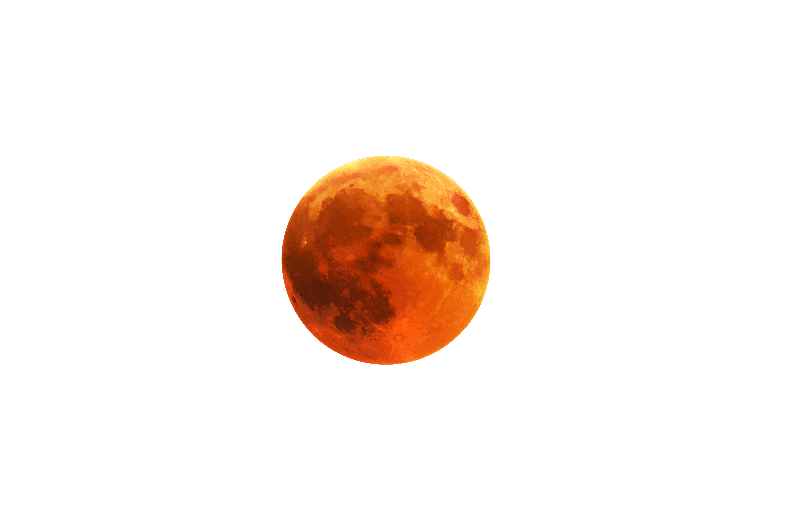

Explore

Explore

Eclipses:Perspective Is Everything
Eva, a schoolgirl of 12, as troublesome as she was, she happened to be one of the brightest
students in her class. Some say, this blessing ran in her family, considering her dad, just
happened to be one of the most successful astrophysicists of the time. Regardless, the
troublesome young lady, managed to get herself selected to be one of the only people to give a
presentation about the eclipses and their occurrences, and their effects.
Eva and her dad had been pretty close. They share the same interests and Eva had always looked
upon her dad no less than a role model. Even so, Eva decided not to bother her dad out of his
busy schedule just to help her with school work and thus she decided to work on her own. To her
misfortune, the weather made it impossible for her to precisely validate and collect the data
optimally. Her dad, even if he was a busy man, never made a second thought when it came to
helping his daughter. Seeing her frustrate over the info he invited her to chess. He dared not
mention about her schoolwork, for he knew it had to be her question that he answered.
Eva, took the
bait as a chance, she had been a chess prodigy since always and made it certain that
the opponents respect her skills regardless of her age. Her dad, being one of them knew that Eva,
of all, couldn’t deny the opportunity for chess and her schoolwork being done simultaneously. To
add merry to her luck, she set the board and made the move without a second thought. After
about a few minutes of the game, Eva decided to break the ice and said, “Dad, do eclipses occur
naturally? Or can it be artificial simulated as well?”